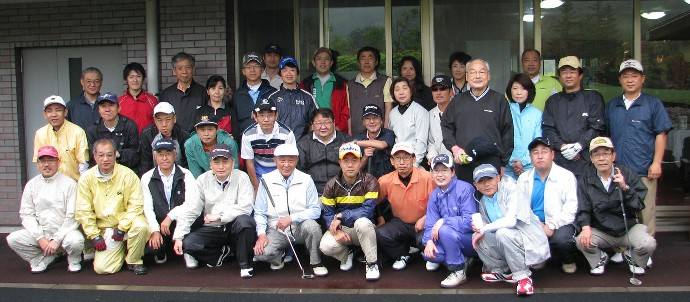

ゴルフ同好会 第32回大会のご報告
第32回大会は、2010年5月23日「埼玉ロイヤルゴルフ倶楽部おごせコース」にて38名が参加して行なわれました。
優勝は久保稔さん（S41卒）
準優勝は堀本さん（S57卒）
3位西口さん（S62卒）
女性優勝は、前回に続いて小島さん（S43卒) 総合でも4位
ベスグロはこれまた前回に引き続き恵比須さん（グロス84)
参加38人のスコア平均は102.5 ハンディ平均22.6、ネット平均約80でした。
次回第33回大会は、10月17日（日） 千葉県「真名カントリークラブ」の予定です。
